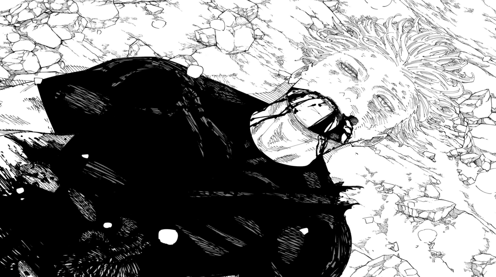
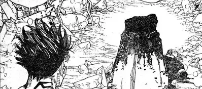

A primeira temporada de Jujutsu Kaisen acompanha a história de Yuji Itadori, um estudante que acaba entrando no mundo das maldições ao engolir um dos dedos de Ryomen Sukuna, um poderoso espírito amaldiçoado. Após esse evento, ele é encontrado pelo feiticeiro Satoru Gojo e passa a estudar na escola Jujutsu, onde aprende a combater essas criaturas ao lado de seus colegas Megumi Fushiguro e Nobara Kugisaki. Durante a temporada, Yuji participa de diversas missões perigosas, enfrenta maldições cada vez mais fortes e entra em conflito com inimigos como Mahito, que representa uma ameaça cruel e filosófica. Ao mesmo tempo, ele lida com o peso de ser hospedeiro de Sukuna e com os desafios emocionais causados pelas batalhas e perdas. A história também mostra um confronto entre escolas de feiticeiros que é interrompido por ataques inimigos, intensificando ainda mais o perigo. No geral, a temporada apresenta o crescimento de Yuji como feiticeiro e como pessoa, enquanto ele tenta proteger os outros e encontrar sentido em meio à violência e à morte.
Temporada 2 (Resumo)A segunda temporada de Jujutsu Kaisen aprofunda a história e os personagens em dois grandes arcos. Primeiro, é mostrado o passado de Satoru Gojo e de seu amigo Suguru Geto, quando ainda eram estudantes, e recebem a missão de proteger uma jovem importante. O trabalho dá errado, resultando em eventos trágicos que mudam completamente a visão de mundo de Geto e marcam Gojo, explicando a origem do conflito entre eles. Uma cena muito impactante no filme que exite sobre esta temporada é quando o Suguro Geto fala:
Você é o Satoru Gojo por que é o mais forte ou você é o mais forte por ser Satoru Gojo?o que demonstra uma reflexão incrível pois se pararmos pra pensar, Satoru gojo é só o "nome" da força que ele carrega e se perdesse-a deixaria de ser quem ele é ou a força é só consequência de quem ele de fato é? Para JJK o Satoru Gojo é o equilibro. essa citação foi um pouco depois dele ter ido pro mal caminho matando todos os
não feiticeirospelo simples fato da Yuki (atualmente ex estudante da escola jujutsu), quando conversou pela primeira vez com o Suguro, acabaram falando de formas de acabar com as maldições no mundo. Uma das formas era
Eliminar a energia amaldiçoada da humanidade(apenas humanos comuns vazam pelo fato dos feiticeiros saberem controlar essa energia) o que era impossível porque apenas um homem conseguiu fazer este feito (Toji Fushiguro) e
Ensinar todos os humanos a usarem energia amaldiçoadaSuguro geto sabendo das possi- lidades escolheu a mais extremista das duas, matar todos e quaisquer humano comum, sem restrições e exceções, ou seja, ele mataria até a familia dele para isso. Na segunda parte, a história avança para o intenso arco do Incidente de Shibuya, onde vários feiticeiros, incluindo Yuji Itadori, enfrentam um grande plano das maldições lideradas por inimigos poderosos. Durante esse evento caótico, batalhas brutais acontecem, vidas são perdidas e segredos importantes vêm à tona. Yuji é forçado a lidar com as consequências do poder de Ryomen Sukuna, que causa destruição massiva ao assumir o controle em momentos críticos, enquanto Gojo é selado, deixando o mundo dos feiticeiros vul- nerável. No geral, a segunda temporada é mais sombria e intensa, mostrando grandes perdas, o colapso do equilíbrio entre humanos e maldições e o amadurecimento forçado de Yuji diante de um cenário cada vez mais desesperador. Temporada 3 (Resumo)
A terceira temporada de Jujutsu Kaisen, subtitulada The Culling Game: Part 1 adapta o arco Jogo do Abate do mangá e mostra os feiticeiros jujutsu enfrentando um novo tipo de ameaça onde laços, regras e poderes são levados ao limite. Depois dos eventos devastadores da segunda temporada, com o selo de Satoru Gojo e a situação caótica no mundo, os personagens entram no Jogo do Abate — um sistema cruel que força lutadores a competir por suas vidas enquanto o plano de Kenjaku segue em frente, reunindo poder espiritual e perseguindo seus próprios objetivos. A temporada retrata combates intensos e estratégicos, o des- pertarde capacidades ocultas, além de confrontos pessoais e morais entre feiticeiros e maldições, incluindo a introdução de aliados e novos inimigos que complicam ainda mais a situação. O final dos primeiros 12 episódios chega num ponto de tensão máxima, com batalhas decisivas em andamento e resultados inesperados que não resolvem completamente o conflito, deixando claro que a luta está longe de terminar e preparando o terreno para a continuação da história numa futura parte ou nova temporada — marcando um dos momentos mais intensos e sombrios da série até agora.
Temporada 4 (resumo da suposição com base o mangá)A segunda parte do arco Culling Game, que será adaptada como a 4ª temporada de Jujutsu Kaisen, continua imediatamente após os eventos da 3ª temporada, mostrando os feiticeiros enfrentando desafios ainda maiores no jogo mortal criado por Kenjaku. Com Satoru Gojo selado, o equilíbrio entre humanos e maldições está em risco, e cada personagem principal — incluindo Yuji Itadori, Megumi Fushiguro e Nobara Kugisaki — precisa desenvolver novas estratégias e habilidades para sobreviver às regras cruéis do Culling Game. Ao longo da temporada, alianças inesperadas são formadas, batalhas decisivas acontecem contra maldições poderosas e humanos manipulados, e segredos importantes sobre os poderes de Sukuna e o verdadeiro objetivo de Kenjaku vêm à tona. A temporada promete um aumento significativo da tensão, mostrando sacrifícios, perdas e confrontos que determinarão o futuro do mundo jujutsu, preparando o terreno para a conclusão final da história e a resolução de todos os conflitos principais deixados pelo mangá.
Temporada 5 (resumo da suposição com base o mangá)Depois que a segunda parte do Culling Game (que adaptará grande parte da saga mortal criada por Kenjaku) for concluída, a história de Jujutsu Kaisen deve entrar na fase final da narrativa, onde as peças conspiratórias que guiavam o mundo das maldições finalmente convergem para um confronto decisivo. No mangá original, após a conclusão do Culling Game os personagens principais, participam de batalhas cruciais contra as forças antagonistas centrais, incluindo a luta final contra Ryomen Sukuna e as consequências do plano de Kenjaku, visando encerrar de uma vez o impacto de Sukuna e a ameaça que o sistema de maldições representa ao mundo. Conforme a história se aproxima de seu desfecho, conflitos extremos acontecem e grandes sacrifícios são feitos, resultando na derrota de Sukuna e a morte de Satoru Gojo e em um novo equilíbrio para a sociedade jujutsu. O final do mangá mostra que, depois do grande confronto, os sobreviventes continuam suas vidas como feiticeiros, lidando com casos cotidianos e reconstruindo a normalidade — com o último dedo de Sukuna sendo selado novamente em um local isolado — encerrando a saga principal com um equilíbrio entre resolução dos grandes conflitos e a continuidade das vidas dos personagens


Satoru Gojo se sacrificou para salvar todos mas infelizmente não terminou o seu trabalho, veja o vídeo de um fã da luta:
parte 2:
SOFRA ASSISTINDO